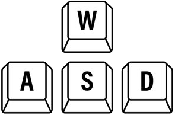
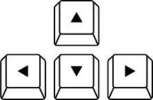
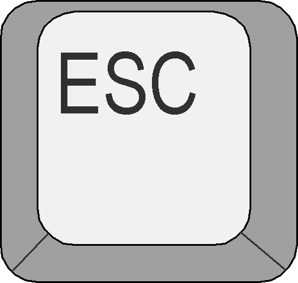

Tutorial
Use WASD or arrow keys to move, or just point and click on the floor with the mouse.
使用 WASD 或方向鍵移動，或用滑鼠點擊地板前進。

/
/
Move the mouse to change your view angle.
移動滑鼠來挑整視角。
Press SPACE to jump.
使用空白鍵跳躍。
Click to interact with objects when aiming.
對準物件後可點擊互動。

Click the text on the wall to toggle between languages.
對著牆上的文字點擊可
切換語言。
切換語言。
Press ESC to view this tutorial.
按 ESC 查看使用說明。
